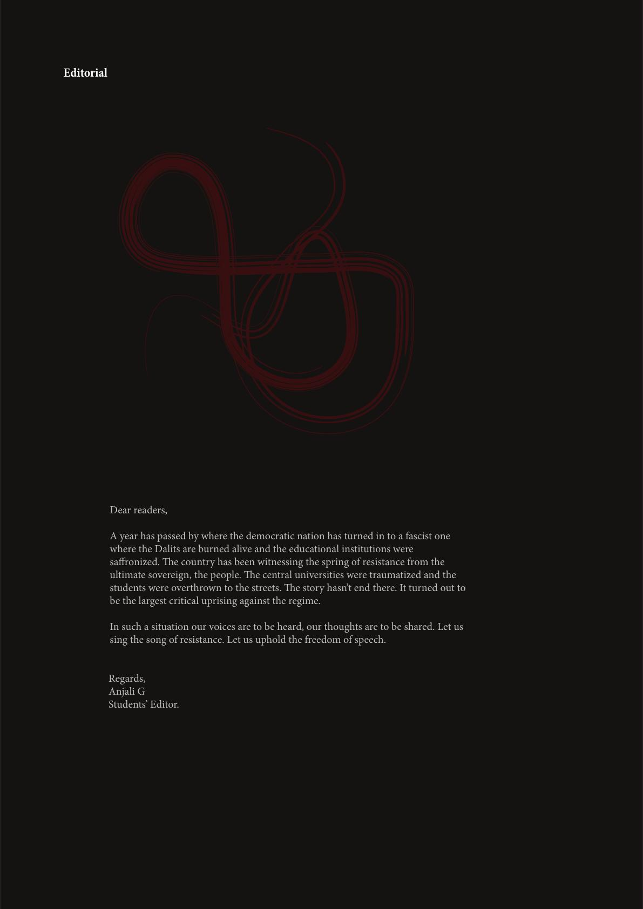

Dear readers,
A year has passed by where the democratic nation has turned in to a fascist one
where the Dalits are burned alive and the educational institutions were
saronized. e country has been witnessing the spring of resistance from the
ultimate sovereign, the people. e central universities were traumatized and the
students were overthrown to the streets. e story hasn’t end there. It turned out to
be the largest critical uprising against the regime.
In such a situation our voices are to be heard, our thoughts are to be shared. Let us
sing the song of resistance. Let us uphold the freedom of speech.
Editorial
Regards,
Anjali G
Students’ Editor.